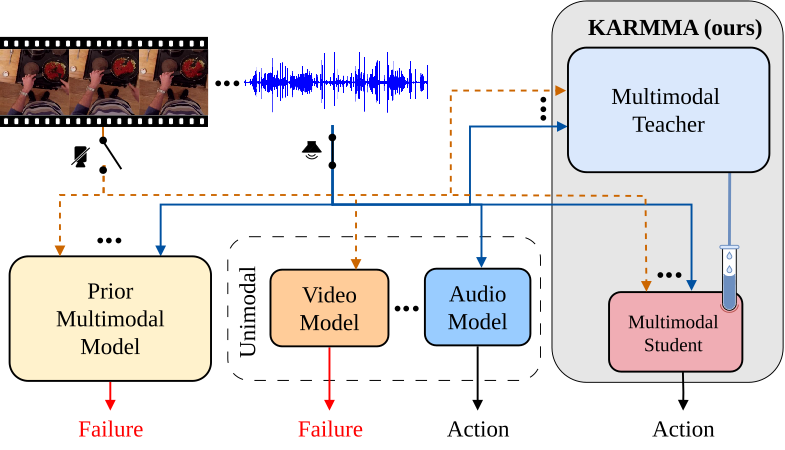
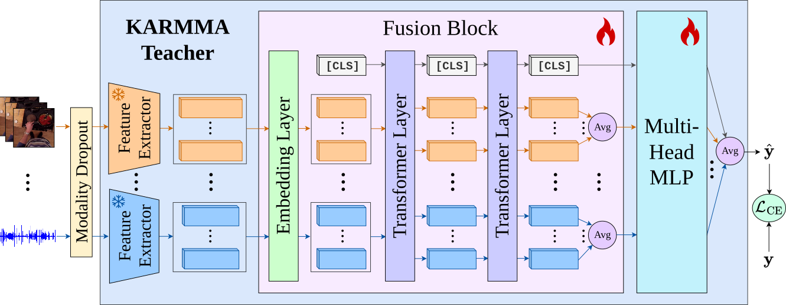
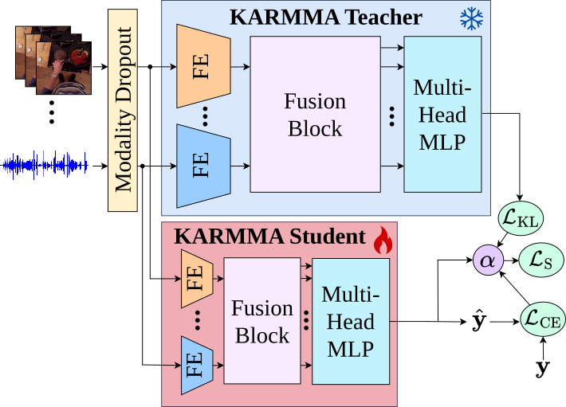
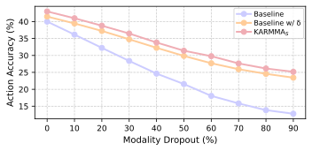
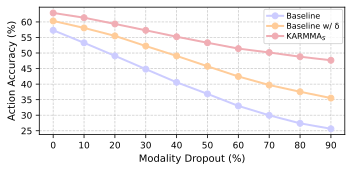
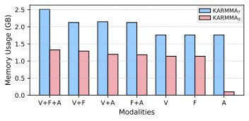
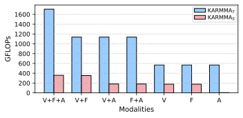

*Equal contribution

TL;DR 🚀: KARMMA is a multimodal-to-multimodal distillation framework for egocentric action recognition that does not require modality-aligned data and supports any subset of modalities at inference. It produces a fast and lightweight student that remains robust under missing modalities without retraining.
Egocentric action recognition enables robots to facilitate human-robot interactions and monitor task progress. Existing methods often rely solely on RGB videos, although additional modalities, such as audio, can improve accuracy under challenging conditions. However, most multimodal approaches assume that all modalities are available at inference time, leading to significant accuracy drops, or even failure, when inputs are missing. To address this limitation, we introduce KARMMA, a multimodal Knowledge distillation framework for egocentric Action Recognition robust to Missing ModAlities that does not require modality alignment across all samples during training or inference. KARMMA distills knowledge from a multimodal teacher into a multimodal student that leverages all available modalities while remaining robust to missing ones, enabling deployment across diverse sensor configurations without retraining. Our student uses approximately 50% fewer computational resources than the teacher, resulting in a lightweight and fast model that is well suited for on-robot deployment. Experiments on Epic-Kitchens and Something-Something demonstrate that our student achieves competitive accuracy while significantly reducing performance degradation under missing modality conditions.
The KARMMA training consists of two stages. In the first stage , the teacher processes the available modalities using frozen, pre-trained unimodal feature extractors and learns to fuse their features through a transformer-based fusion block. The fused features are then passed to a multi-head MLP and optimized with cross-entropy loss. In the second stage , the student, built with smaller feature extractors and a compact fusion block, learns from the frozen teacher using a combination of cross-entropy and knowledge distillation.


Our proposed KARMMA framework incorporates three main enhancements:
In real-world robotic deployments, sensors may fail at run time (e.g., occluded cameras or muted microphones), leading to dynamically missing modalities. To emulate such conditions, we gradually increase the probability of dropping each modality from 0% to 90% during inference. We evaluate:

(a) Epic-Kitchens

(b) Something-Something
Results show that the Baseline is highly sensitive to missing modalities, suffering large accuracy degradation even at low dropout rates. Incorporating modality dropout and our missing-modality strategy significantly improves robustness, as Baseline w/ δ exhibits a much smaller accuracy drop. Furthermore, our distillation pipeline enables KARMMAS to consistently outperform both baselines across all scenarios and datasets.
Our KARMMA student reduces memory usage by approximately 50% at inference compared to the teacher while significantly lowering GFLOPs, resulting in a lightweight model suitable for edge and on-robot deployment. The largest savings occur in unimodal audio (A) settings, where the student employs a compact audio encoder, substantially smaller than those used for RGB video (V) and optical flow (F).


@inproceedings{carrion2026karmma,
author = {Dustin Carrión-Ojeda* and Maria Santos-Villafranca* and Alejandro Perez-Yus and Jesus Bermudez-Cameo and Jose J. Guerrero and Simone Schaub-Meyer},
title = {Multimodal Knowledge Distillation for Egocentric Action Recognition Robust to Missing Modalities},
booktitle = {Proceedings of the IEEE International Conference on Robotics & Automation (ICRA)},
year = {2026},
note = {to appear}
}This work was funded by the Deutsche Forschungsgemeinschaft (DFG, German Research Foundation) under Germany's Excellence Strategy (EXC-3057/1 "Reasonable Artificial Intelligence", Project No. 533677015). We gratefully acknowledge support from the hessian.AI Service Center (funded by the Federal Ministry of Research, Technology and Space, BMFTR, grant No. 16IS22091) and the hessian.AI Innovation Lab (funded by the Hessian Ministry for Digital Strategy and Innovation, grant No. S-DIW04/0013/003). SSM has been funded by the DFG – 529680848. MSV, APY, JBC, and JJG further acknowledge support by projects PID2024-158322OB-I00 and PID2021-125209OB-I00, (MCIN/AEI/10.13039/501100011033/ FEDER, UE), project JIUZ2024-IyA-07, DGA 2022-2026 scholarship, and Grant SMT Erasmus+, project 2022-1-ES01-KA131-HED-000065592 funded by Campus Iberus.
This webpage template is adapted from Nerfies, under a CC BY-SA 4.0 License.